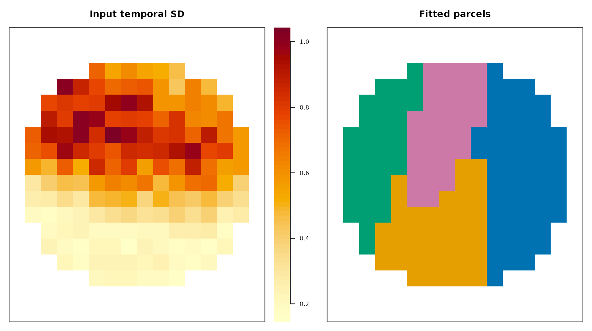

What does the complete workflow do?
The production path has five explicit boundaries: read the 4D image and mask, check that their geometry matches, fit a partition, validate the returned object against those inputs, and write then reread the label map. This article executes every boundary using temporary NIfTI files created from a deterministic fixture.
For your analysis, replace only vec_file and
mask_file with your own paths. The remaining calls are the
same.
How do you create a reproducible input boundary?
The generated data contain four spatial regions with distinct time series. We write them first so the example exercises the same I/O path as external files.
base_source <- generate_synthetic_volume(
scenario = "gaussian_blobs", dims = c(16, 16, 8),
n_clusters = 4, n_time = 40, noise_sd = 0.08, seed = 42
)
dims <- base_source$dims
ijk <- arrayInd(seq_len(prod(dims)), dims)
inside <- ((ijk[, 1] - 8.5) / 7.5)^2 +
((ijk[, 2] - 8.5) / 7.0)^2 + ((ijk[, 3] - 4.5) / 3.8)^2 <= 1
mask_array <- array(as.integer(inside), dims)
spatial_space <- neuroim2::NeuroSpace(
dims, spacing = c(2, 2.5, 3), origin = c(-18, 7, 11)
)
series_space <- neuroim2::NeuroSpace(
c(dims, 40L), spacing = c(2, 2.5, 3), origin = c(-18, 7, 11)
)
series_values <- array(
as.numeric(base_source$vec), dim = dim(base_source$vec)
)
source_data <- list(
vec = neuroim2::NeuroVec(series_values, series_space),
mask = neuroim2::NeuroVol(mask_array, spatial_space),
truth = base_source$truth[inside], dims = dims
)
stopifnot(all(sort(unique(source_data$truth)) == 1:4), any(!inside), any(inside))
vec_file <- file.path(tempdir(), "neurocluster-input-4d.nii.gz")
mask_file <- file.path(tempdir(), "neurocluster-input-mask.nii.gz")
neuroim2::write_vec(source_data$vec, vec_file)
neuroim2::write_vol(source_data$mask, mask_file)How do you read and check the data?
Use read_vec() for a 4D image and
read_vol() for a 3D mask. The mask controls both which
voxels enter clustering and the order of returned labels.
vec <- neuroim2::read_vec(vec_file)
mask <- neuroim2::read_vol(mask_file)
input_max_abs_error <- max(abs(as.array(vec) - as.array(source_data$vec)))
c(vec_dimensions = paste(dim(vec), collapse = " x "),
mask_dimensions = paste(dim(mask), collapse = " x "),
included_voxels = sum(as.array(mask) > 0),
max_signal_roundtrip_error = signif(input_max_abs_error, 3))
#> vec_dimensions mask_dimensions included_voxels
#> "16 x 16 x 8 x 40" "16 x 16 x 8" "840"
#> max_signal_roundtrip_error
#> "1.19e-07"How do you fit and validate the partition?
ReNA is used here to keep the first production-style path concise. Method choice and tuning should be justified separately; see Compare methods and Choose parameters.
fit <- cluster4d(
vec, mask, n_clusters = 4, method = "rena",
connectivity = 26, parallel = FALSE
)
validation <- validate_cluster4d(fit, vec, mask)
c(valid = validation$valid, requested_k = 4, actual_k = fit$actual_k)
#> valid requested_k actual_k
#> 1 4 4
metrics <- cluster_metrics(fit, truth = source_data$truth)
metrics[c("ari_truth", "size_summary", "spatial_rms_distance_mm")]
#> $ari_truth
#> [1] 0.8000083
#>
#> $size_summary
#> min median max
#> 112 194 340
#>
#> $spatial_rms_distance_mm
#> [1] 8.559428
The input temporal variability and fitted parcel map at the same middle axial slice. The quantitative color bar reports temporal standard deviation; the parcel colors are categorical and intentionally use a different scale.
How do you export and prove the round trip?
Write the ClusteredNeuroVol directly. It carries the
source geometry and final integer labels. Then read the file back and
compare every voxel with the object that produced it.
output_file <- file.path(tempdir(), "neurocluster-parcels.nii.gz")
neuroim2::write_vol(fit$clusvol, output_file)
exported <- neuroim2::read_vol(output_file)
c(path = output_file, bytes = file.info(output_file)$size,
labels = paste(sort(unique(as.integer(as.array(exported)))), collapse = ", "))
#> path
#> "/tmp/RtmppSDdWQ/neurocluster-parcels.nii.gz"
#> bytes
#> "410"
#> labels
#> "0, 1, 2, 3, 4"What should you preserve with the result?
Keep the input mask, image geometry, preprocessing record, package
version, method, complete parameters, requested and actual K, validation
outcome, and selection diagnostics. The NIfTI label map is an exchange
artifact; the full cluster4d_result retains richer
feature-center and provenance information for auditing and downstream R
workflows.